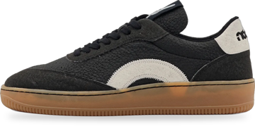
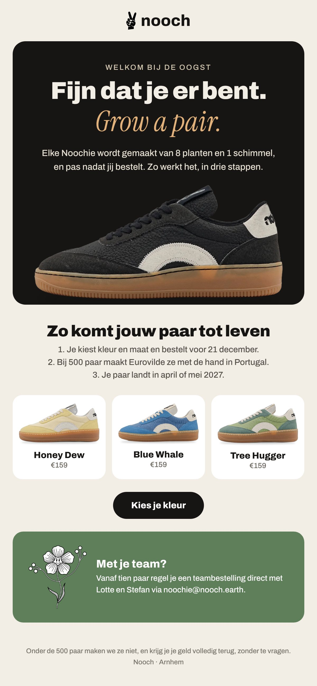
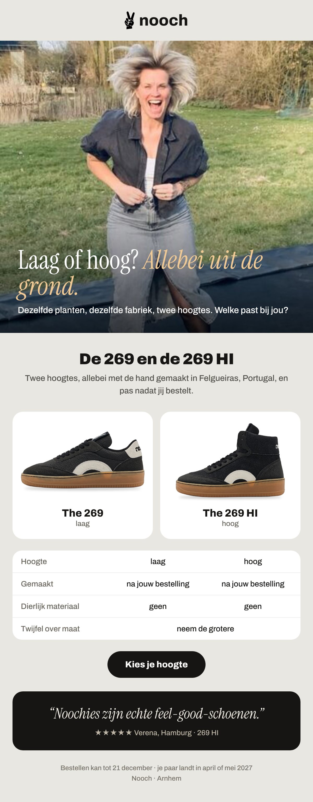

Voorbeelden voor NOOCH
Vijf redenen om een paar te laten groeien.
Vijf advertenties en twee nieuwsbrieven, gemaakt met jullie eigen foto's en productinformatie. Een idee van Issey Kooijmans van Digital Essence; niets hiervan is gepubliceerd.
Hoi team NOOCH, een sneaker die pas bestaat als er 500 mensen ja tegen zeggen is een verhaal dat zichzelf vertelt. Daarmee heb ik vijf advertenties en twee nieuwsbrieven gemaakt, met jullie eigen productfoto's en foto's van echte dragers uit jullie reviews. Niets is gepubliceerd. Past het niet, zeg het gerust.
Eerst even uitgelegd
Wat is een invalshoek?
Een invalshoek is de reden waarom iemand iets koopt. Dezelfde sneaker kun je op heel veel manieren verkopen, omdat niet iedereen om dezelfde reden koopt.
Dezelfde sneaker, vijf verschillende redenen om hem te kopen. Elke reden wordt een eigen advertentie.

- 01Zoekvraag → antwoord"Bestaan er eigenlijk sneakers zonder plastic of leer?"
- 02Nieuw/lancering"Wat is dit voor merk, en kan ik nu meedoen?"
- 03Transparantie"Waar is hij dan wél van gemaakt?"
- 04Vergelijken"Waarom zou ik niet gewoon een gewone sneaker kopen?"
- 05Zekerheid"Wat als ik nu bestel en er komt niks?"
We testen die invalshoeken naast elkaar. Na een paar dagen zie je welke het meest verkoopt. Daar maken we er meer van, en wat niet werkt, gaat eruit.
Zo werk ik
Van eerste blik tot bestelling.
Niet iedereen die een advertentie ziet, is meteen klaar om te kopen. Daarom maak ik voor elke stap andere advertenties. Zo spreek je iedereen aan op het moment waar hij of zij zit.
- Stap 1 · Top of funnel
Kennismaken
Mensen die NOOCH nog nooit hebben gezien.
Doel: dat ze stoppen met scrollen en nieuwsgierig worden.
Zoals een etalage: je loopt langs en kijkt even naar binnen.
- Stap 2 · Middle of funnel
Overtuigen
Mensen die jullie al eens zagen, maar nog twijfelen.
Doel: hun vragen beantwoorden. Wat is het, waarom dit en niet iets anders?
Zoals een verkoper die rustig uitlegt wat het verschil is.
- Stap 3 · Bottom of funnel
Kopen
Mensen die bijna willen bestellen.
Doel: het laatste duwtje, zoals een aanbod, reviews of de zekerheid van gratis retour.
Zoals de kassa: duidelijk, makkelijk en zonder risico.
Wat ik zag: NOOCH heeft in Nederland volgens mij nu geen advertenties live. Undo For Tomorrow heeft er 30 tegelijk live en Mercer Amsterdam meer dan 30, vaak per kleur of collectie. Deze set begint met de vraag die mensen echt intypen en een echte draagster, legt daarna uit wat erin zit en waarom het anders is, en eindigt met jullie sterkste zekerheid: onder de 500 paar krijg je je geld terug.
Advertenties · 9:16
Vijf advertenties, verdeeld over de stappen.
Tik op een advertentie om hem groot te bekijken.
Voor mensen die NOOCH nog niet kennen.
Voor mensen die jullie kennen, maar nog twijfelen.
Voor wie bijna bestelt.
Waarom advertenties
Zo groeien schoenenmerken op Instagram.
De meeste mensen ontdekken een nieuw schoenenmerk niet via Google, maar tijdens het scrollen op Instagram. Juist een merk dat in oogsten werkt, heeft daar elke keer een nieuw moment om iets te vertellen. Een nieuwsbrief zorgt daarna dat iedereen die zich aanmeldt weet wanneer de volgende oogst opengaat.
Aantal advertenties: Meta Advertentiebibliotheek, 25-11-2026.
Nieuwsbrief 1 van 2 · Welkomstmail
Fijn dat je er bent. Grow a pair.
Op jullie site kun je je aanmelden met 'Keep me posted'. Dit is een voorbeeld van de eerste mail die nieuwe aanmelders dan kunnen krijgen: wat een Noochie is en hoe een oogst werkt.
- Hoe jouw paar tot leven komt, in drie stappen tot april of mei 2027
- Drie kleuren om uit te kiezen, met de echte productfoto's
- Teambestellingen vanaf tien paar en de geld-terug-belofte onderaan

Nieuwsbrief 2 van 2 · Vergelijking
Laag of hoog? Allebei uit de grond.
Een mail voor mensen die twijfelen tussen de 269 en de 269 HI, met een echte draagster bovenaan en een korte vergelijking.
- De 269 en de 269 HI naast elkaar
- Een eenvoudig overzicht met het maatadvies van jullie site
- Een echte review van Verena over de 269 HI als afsluiter

Ritme
Zo kan een week eruitzien.
Dit is een voorbeeld, geen vast pakket. De kracht zit in het ritme: regelmatig nieuwe invalshoeken testen in elke stap, en je nieuwsbrief vast versturen. Wat werkt, doen we vaker.
- MaNieuwe advertenties liveNieuwe invalshoeken in elke stap tegelijk testen.
- DiMeekijkenWelke invalshoek pakt de doelgroep op?
- WoBijsturenBudget naar wat werkt, de rest eruit.
- DoNieuwsbrief verstuurdVast moment, zodat lezers erop gaan rekenen.
- VrKorte updateWat werkte en wat we volgende week doen.
Benieuwd hoe dit voor NOOCH werkt?
Een kwartiertje bellen is genoeg om te kijken of het past. Geen verplichtingen.